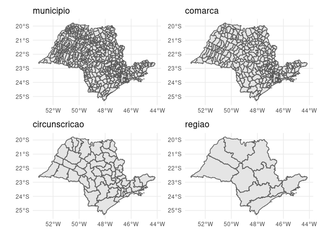
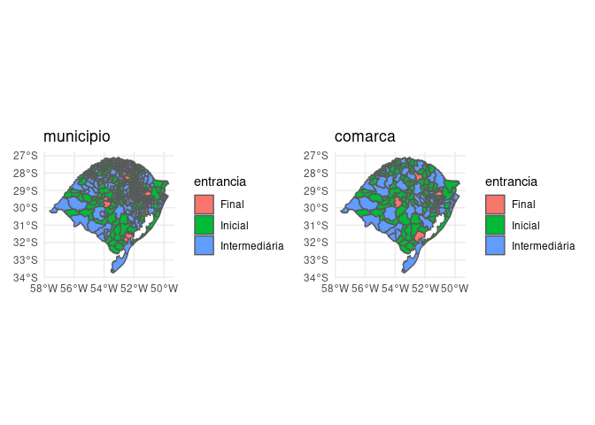

Visão Geral
O objetivo do {abjMaps} é possibilitar a criação de belos mapas jurimétricos utilizando-se de recursos do pacote sf (contém modelos de armazenamento e acesso de características geográficas.)
Para enriquecer a análise, são incluídos dados relativos aos estados, municípios e comarcas do Brasil.
Veja o arquivo data-raw/comarcas_tjsp.R para ver como organizamos nossos dados.
Para Instalar
Você pode instalar a versão mais recente do {abjMaps} com:
# install.packages("devtools") devtools::install_github("abjur/abjMaps")
Como Usar
Para ilustrar, segue-se exemplos de uso:
Tribunal de Justiça de São Paulo:
library(abjMaps) library(tidyverse) #> ── Attaching packages ─────────────────────────────────────── tidyverse 1.3.0 ── #> ✓ ggplot2 3.3.2 ✓ purrr 0.3.4 #> ✓ tibble 3.0.4 ✓ dplyr 1.0.2 #> ✓ tidyr 1.1.2 ✓ stringr 1.4.0 #> ✓ readr 1.4.0 ✓ forcats 0.5.0 #> ── Conflicts ────────────────────────────────────────── tidyverse_conflicts() ── #> x dplyr::filter() masks stats::filter() #> x dplyr::lag() masks stats::lag() d_sf #> # A tibble: 4 x 2 #> nivel sf #> <chr> <named list> #> 1 municipio <sf[,12] [645 × 12]> #> 2 comarca <tibble [319 × 3]> #> 3 circunscricao <tibble [57 × 2]> #> 4 regiao <tibble [10 × 2]>
graphs <- purrr::pmap(d_sf, ~{ ggplot(..2) + geom_sf() + ggtitle(..1) + theme_minimal() }) patchwork::wrap_plots(graphs)
 Tribunal de Justiça do Rio Grande do Sul:
graphs <- purrr::pmap(d_sf_tjrs, ~{ ggplot(..2) + geom_sf(aes(fill = entrancia)) + ggtitle(..1) + theme_minimal() }) patchwork::wrap_plots(graphs)

Licença
O sistema de gerenciamento de conteúdo {abjMaps} é licenciado sob os termos da MIT + file LICENSE
Citation
To cite abjMaps, write citation("abjMaps"):
To cite package ‘abjMaps’ in publications use:
Julio Trecenti and Fernando Correa (2017). abjMaps: Organizing Data To Create
Jurimetric Maps. R package version 0.1.9000.
A BibTeX entry for LaTeX users is
@Manual{,
title = {abjMaps: Organizing Data To Create Jurimetric Maps},
author = {Julio Trecenti and Fernando Correa},
year = {2017},
note = {R package version 0.1.9000},
}